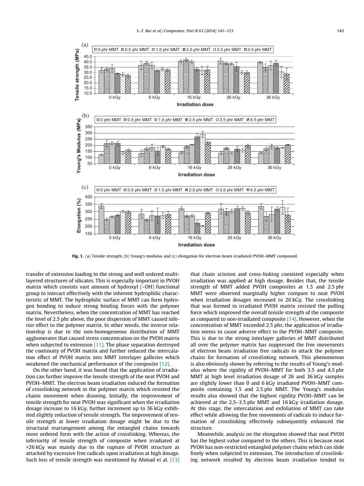
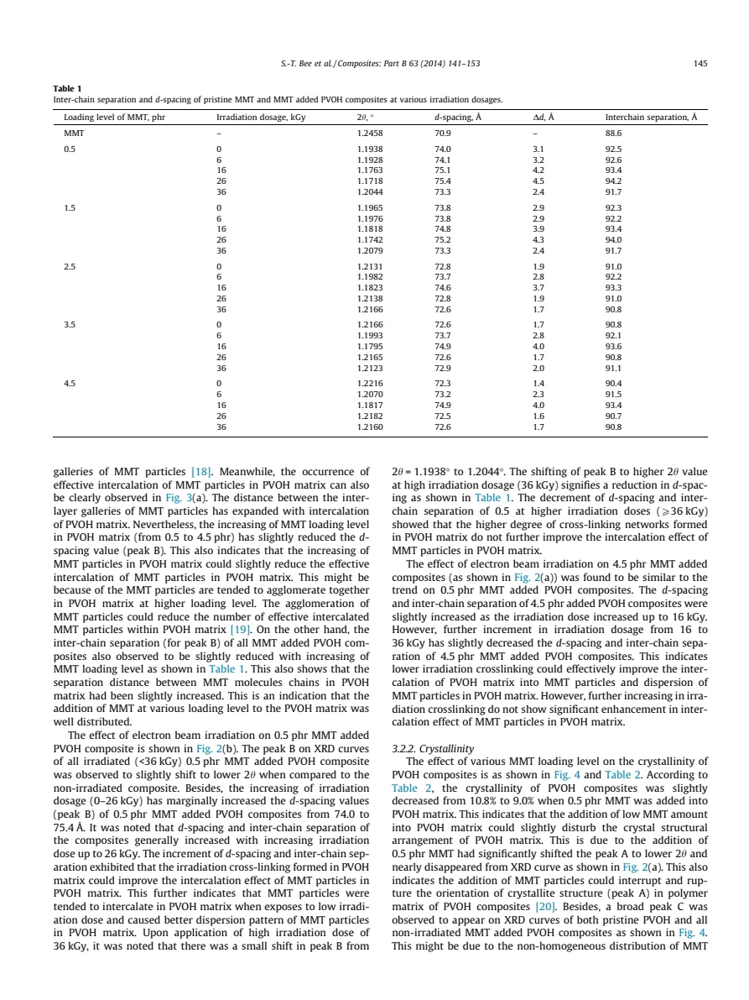
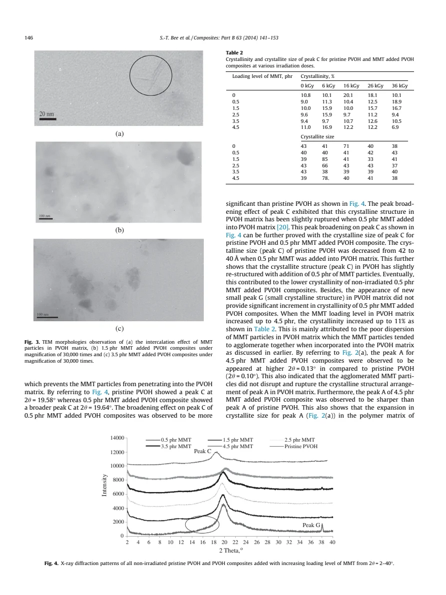
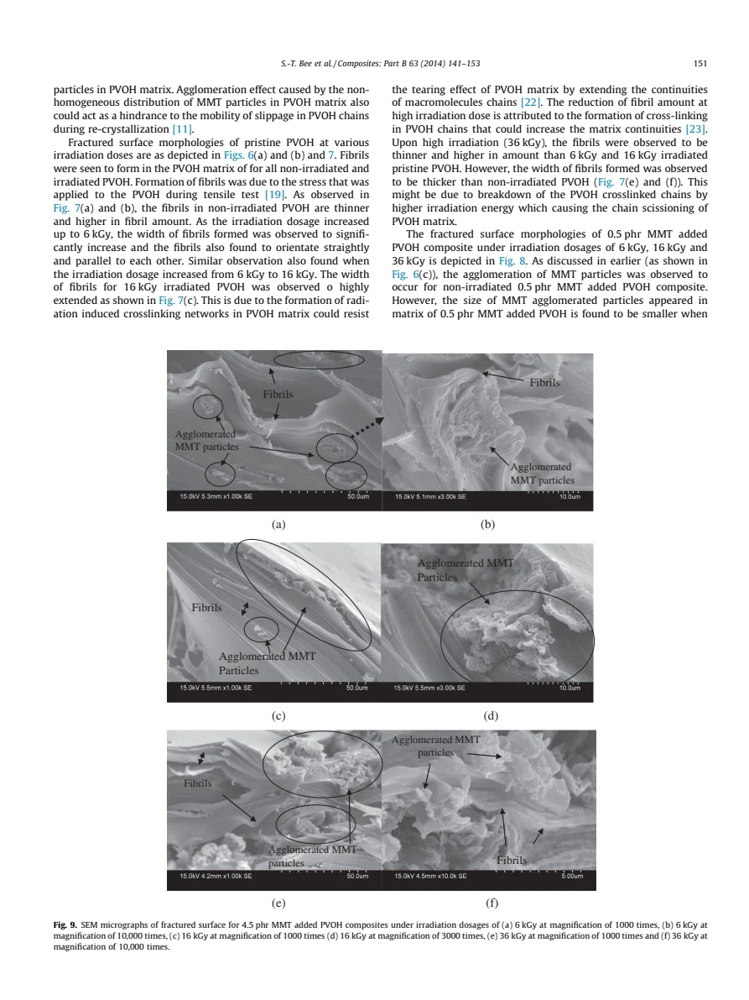

Bee · supplied source 2014 · experiment
Effects of electron beam irradiation on mechanical properties and nanostructural–morphology of montmorillonite added polyvinyl alcohol composite
Irradiation can improve a polymer composite within a composition-dependent window; more clay or more dose does not guarantee better performance.
The question: How do clay loading and intentional electron irradiation jointly change PVOH strength, crystalline order and filler dispersion?
Before you start: the terms you need
- PVOH: a hydroxyl-bearing polymer; also called PVA.
- MMT: montmorillonite, a layered silicate filler.
- phr: parts of filler by mass per hundred parts of polymer.
- kGy: absorbed energy per mass; 1 kGy = 1000 J/kg.
- Intercalation: polymer enters galleries between clay layers; exfoliation separates layers further.
See → explain → check
Follow the idea in 4 pictures.
Picture 1 / 4
Vary two controls
Look for: Keep clay loading separate from absorbed irradiation dose.
Swipe across the picture to read every label, or enlarge it below.
- Clay loading + dose
- Tensile + XRD + microscopy
- Compare property changes
A design schematic, not a measured dose-response curve.
The design compares composition and processing, then checks several independent observables.
Picture 2 / 4
Connect or cut the chains
Look for: A crosslink joins chains; scission breaks a chain.
Swipe across the picture to read every label, or enlarge it below.
- Crosslink
- Chain scission
Teaching graph of proposed mechanisms; individual chemical bonds were not counted by these measurements.
The authors interpret moderate-dose strengthening and higher-dose loss through competing pathways.
Picture 3 / 4
Spread layers or form clusters
Look for: Expanded clay galleries and large agglomerates describe different length scales.
Swipe across the picture to read every label, or enlarge it below.
- Expanded galleries
- Agglomerated particles
Not a TEM reconstruction. Intercalation, exfoliation and agglomeration may coexist.
Filler dispersion helps transfer load; agglomeration can weaken the matrix despite added filler.
Check the original: PDF p. 4 · PDF p. 5 · PDF p. 6 · PDF p. 10 · PDF p. 12
Picture 4 / 4
Make the evidence meet
Look for: Read strength, crystalline fraction and micrographs together.
Swipe across the picture to read every label, or enlarge it below.
- Strength
- Crystallinity
- Morphology
Separate measurements constrain the proposed mechanism; they need not share the same optimum.
A useful processing window is specific to loading and to the property being optimized.
Check the original: PDF p. 3 · PDF p. 5 · PDF p. 6 · PDF p. 12
Predict before revealing
The 0.5 phr sample’s crystalline fraction rises at 36 kGy. Does that establish that 36 kGy optimizes every composite property?
Choose an answer, then compare the reasoning.
Table 2 varies with composition, and strength, modulus, elongation and dispersion measure different things. A single optimum cannot be read from one row.
Read the answer
No; loading and the chosen observable change the relevant comparison. Table 2 varies with composition, and strength, modulus, elongation and dispersion measure different things. A single optimum cannot be read from one row.
Go deeper Follow the full argument
Why clay and irradiation are combined
The starting idea is to reinforce hydrophilic PVOH with a small amount of layered MMT, then use irradiation as a second processing variable. Hydroxyl groups can interact with the filler surface, and polymer entering the clay galleries may help transfer mechanical load. But the two controls also introduce different failure paths: extra filler can cluster, while extra irradiation can cut chains. The paper therefore asks whether the treatment improves the composite rather than assuming reinforcement from the ingredient list. Intercalated structures retain layered order with polymer inside galleries; exfoliated structures have more widely separated layers. These terms should not be used as synonyms for an entirely uniform sample.
Follow the specimen through the experiment
The authors solution-cast fully hydrolyzed PVOH with 0.5, 1.5, 2.5, 3.5 and 4.5 phr MMT, dry the films and compare untreated specimens with 6, 16, 26 and 36 kGy treatments. Dose here is absorbed energy per mass. It is different from electron charge per image area in the companion SEM paper. Tensile measurements average five specimens; XRD tests spacing and crystalline order; SEM examines fractured surfaces; TEM examines ultrathin sections. Each observation belongs to a different sample preparation and length scale. The irradiation instrument description lists both 15 kV and 1 MeV; the guide preserves the reported dose series and does not silently reconcile that inconsistent energy description.
Strength, stiffness and ductility answer different questions
Figure 1 compares tensile strength, Young’s modulus and elongation, not a single universal measure of quality. The authors report stronger neat PVOH around 16 kGy and marginally higher strength for 1.5 and 2.5 phr composites than neat PVOH at 26 kGy. The 26 kGy ranking in that prose is not consistent with the displayed 1.5 and 2.5 phr bars in Fig. 1(a); keep the reported interpretation separate from that visual conflict. The larger filler loadings generally perform less favorably in the strength comparison. Modulus concerns resistance to small deformation; elongation concerns deformation before break. Linking chains can increase resistance to motion yet reduce their freedom to slide. The proposed explanation of some higher-dose elongation changes invokes shorter chains produced by scission. These mechanisms interpret the mechanical trends; they are not direct chemical identification of every crosslink or broken chain.
What a low-angle diffraction shift means
For an assigned reflection at fixed wavelength, smaller Bragg angle means larger spacing through d = λ/(2 sin θ). Table 1 reports the peak-B spacing of pristine MMT as 70.9 Å and the untreated 0.5 phr composite as 74.0 Å. The 0.5 phr row reaches 75.4 Å at 26 kGy, then falls to 73.3 Å at 36 kGy. The 4.5 phr series has its largest listed spacing at 16 kGy. These are the paper’s fitted assignments and values, not independent structural refinements here. A changing peak can support a gallery-spacing interpretation, but disappearing intensity alone is not sufficient proof of complete exfoliation. Compare TEM before making that stronger inference.
Do not replace the crystallinity table with a universal curve
Table 2 makes the composition dependence visible. Neat PVOH has reported crystalline fractions of 10.8% untreated, 20.1% at 16 kGy and 10.1% at 36 kGy. The 0.5 phr series instead reaches 18.9% at 36 kGy, while the 4.5 phr series falls to 6.9% at that dose after a higher value at 6 kGy. This difference matters because the abstract’s high-dose decrease does not describe every composition equally. Peak breadth and fitted crystallite size concern coherent ordered domains; crystalline fraction concerns the relative ordered contribution. Neither equals filler dispersion or tensile strength. Small numerical inconsistencies between the text and table should be checked in the original rather than turned into additional precision.
Read fracture images as evidence with a preparation history
The SEM panels show fractured tensile specimens, so fibrils and tearing partly record deformation during the test. The paper compares filler aggregates, fibril dimensions and matrix continuity as loading and irradiation change. TEM independently shows layered regions and larger agglomerates at increased loading. The authors connect fewer aggregates at suitable irradiation to better intercalation and dispersion, and renewed tearing at high dose to scission. A few micrographs do not by themselves quantify the entire film’s filler distribution, chemical crosslink density or three-dimensional network. Compare the stated magnification and scale bars across panels and use the mechanical and diffraction observations to test the interpretation.
PDF p. 6 · PDF p. 8 · PDF p. 9 · PDF p. 10 · PDF p. 11 · PDF p. 12
The transferable conclusion
Use this work as an example of testing a processing window across several observables. First choose the desired property, then keep composition fixed while comparing doses; next compare loading at fixed dose. Only then connect the changes to a mechanism. Strengthening, increasing crystalline fraction and reducing visible aggregates can support a coherent explanation when they agree, but disagreements are informative. The results concern the particular cast PVOH/MMT formulations and irradiation conditions. They do not provide a dose prescription for another polymer, a microscope tolerance threshold, or evidence that irradiation always improves a material.
Translate the mathematics Essential equations and their meaning
d = λ / (2 sin θ)
Symbols: d: assigned layer spacing; λ: X-ray wavelength; θ: half of the plotted diffraction angle 2θ.
At a fixed wavelength, a shift to smaller 2θ corresponds to larger d. Keep wavelength and spacing in the same units.
L = kλ / (β cos θ)
Symbols: L: coherent crystallite-size estimate; k: shape factor; β: peak FWHM in radians; θ: Bragg angle.
The Scherrer interpretation depends on the peak assignment and breadth model. Strain and instrumental broadening can also affect width; L is not particle diameter or crystalline fraction.
Read the evidence Guided original source pages

PDF p. 3

PDF p. 5

PDF p. 6

PDF p. 11
What the evidence supports—and where it stops
- Results concern the supplied 2014 formulations and methods; no current universal processing recommendation is inferred.
- The source’s irradiation instrument energy description and some figure/table references are internally inconsistent; the reported dose series is retained.
- Crosslinking and scission are the authors’ mechanism interpretation, not independently measured bond populations.
- Quoted spacings/crystallinity are assigned source results; the guide does not independently refit diffraction peaks.
- The source prose and displayed Fig. 1(a) bars disagree on the marginal 26 kGy ranking; the guide does not resolve that conflict by inventing values.
Explain it back.
Try answering aloud before opening the explanation.
How would you distinguish intercalation from agglomeration?
Intercalation concerns polymer inside clay galleries. Agglomeration concerns clusters of particles. Expanded galleries can exist inside a sample that still contains clusters; combine diffraction and spatial microscopy.
Why is a small-angle peak shift useful?
At fixed λ, Bragg’s relation converts the assigned peak angle to spacing. Lower 2θ means larger d, provided the same reflection is being compared.
What makes crosslinking an interpretation here?
Mechanical trends, diffraction and fracture morphology support the proposed pathway, but the listed measurements do not directly count molecular crosslinks.
Why compare the Table 2 rows separately?
The neat, low-loading and high-loading dose trends differ. Replacing them by one average curve would erase the central composition dependence.
Connect another source.
Source version, reading coverage and preservation
All substantive extracted body text read; original equations, tables and microscopy pages visually checked.
Reviewed body pages: 1, 2, 3, 4, 5, 6, 7, 8, 9, 10, 11, 12. Bibliography on pages 12–13 inspected for structure; cited works were not independently reviewed.
Source SHA-256: ab0698b0601d006bddddfd0baf25f3b45d773acf6da0718c475c7a3c7fc7c752. Original file bytes preserved locally, and in this room’s original download.
ComposB - Bee - Electron irradiation of montmorillonite-PVA composites - 2014.pdf